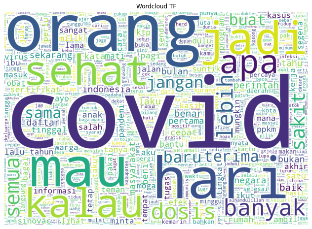
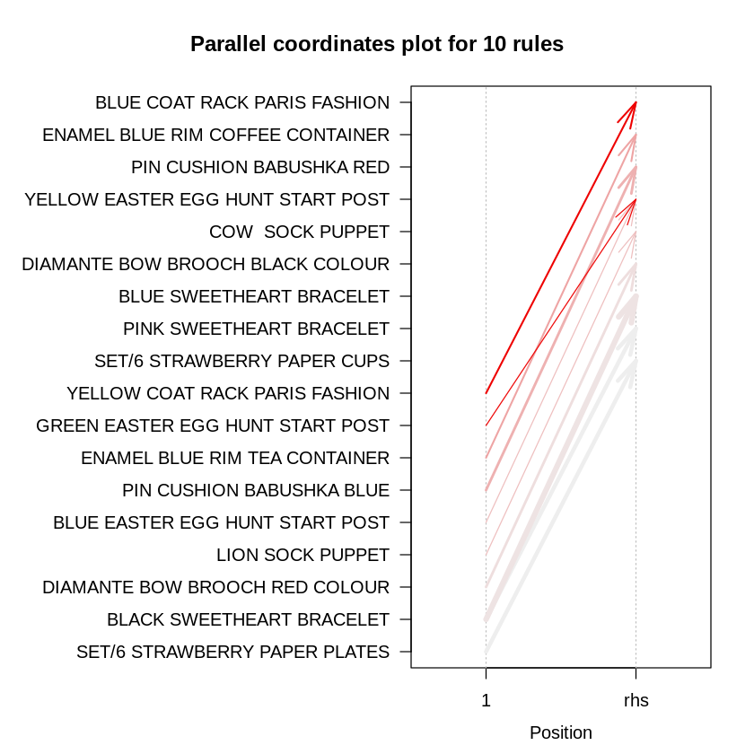

Vauwez Sam El Fareez
Data Science Enthusiast
As data analyst/scientist with Math and Statistics knowledge and having Experience in I.T. with command on major software platforms and tools like Python, R, and looking for carrier enrichment opportunity in the areas of Business Analytics and Data Science.
I'm also exploring more creative pursuits creating back-end apps.
Featured Projects
View selected projects below. More information can be found at my github profile.

Clustering Vaccination Tweet
Research project about best clustering method for text data especially vaccination tweet in Indonesia
View project / case study
Product Packaging
Produce product packages that can solve stock problems and increase sales.
View project / case studyEducation
Universitas Mulawarman - Samarinda, Kalimantan Timur
Bachelor of Computer Science, 2020-2024
Major in Informatics.
Deep Learning Online Bootcamp
DPhi, certificate, July-August 2021
The bootcamp consisted of 4 weeks of coursework, live sessions from industry experts, quizzes, and a project/datathon on real-world dataset.